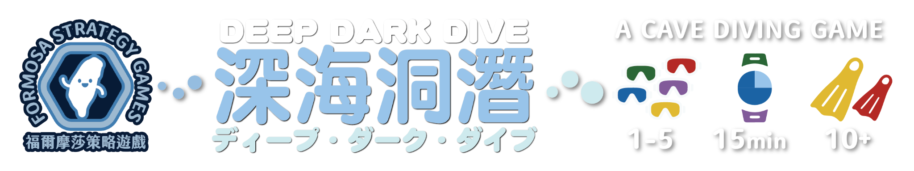
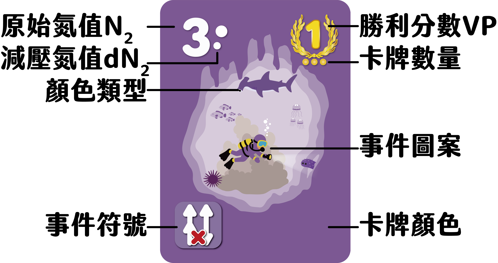
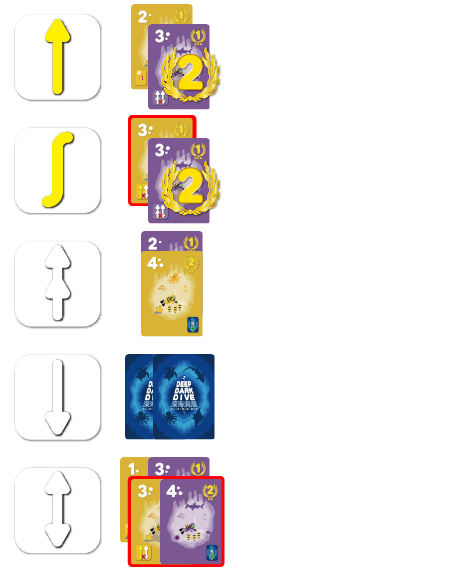

遊戲簡介
歡迎來到《深海洞潛》的世界，你必須善用你的手牌打出不同組合來得分，遊戲中注意手牌（原始氮值）和減壓牌（減壓氮值）左上角的氮值和不要超過你的氮上限，氮上限一開始為14，隨著遊戲進行而可能下降，卡牌右上角為分數，當有人完成目標分數且同輪所有人完成行動後結束。

遊戲流程
由起始玩家開始，選擇以下5種行動的1種，順時針輪流行動1次；當所有玩家完成一輪遊戲後，開始下一輪，遊戲進行到有玩家獲得目標分數且此輪所有玩家都完成行動，或只剩１名玩家後結束遊戲。

勝利條件
2人局目標16分，3人局目標14分，4人局目標12分，5人局目標10分，遊戲結束時，若只剩1名未出局玩家，則此玩家立即獲勝；否則由分數最高的玩家獲勝，若分數相同，依序比較：1.氮上限較高的玩家；2.氮值指示物在最上方的玩家。
即時勝率
公共區
棄牌區
請選擇你的手牌或減壓牌再按行動按鈕